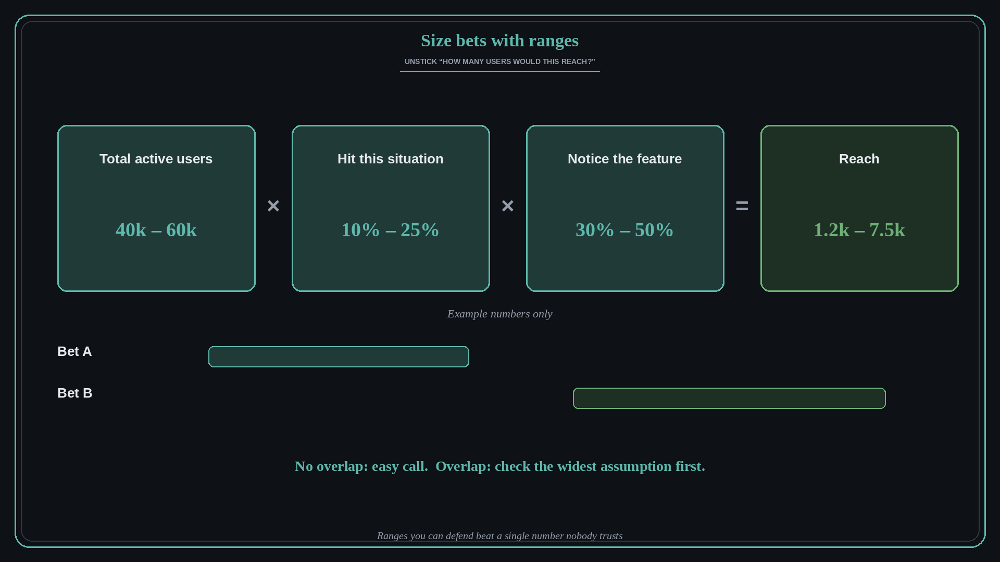

Unstick prioritization with sized ranges, not guesses
Source: George Nurijanian (@nurijanian)
original post
What it claims
George Nurijanian packaged his quick sizing process for product bets into a reusable AI skill. He uses it when a prioritization meeting stalls on the question “how many users would this reach?”. You paste in the question, and it turns it into supportable numerical estimates, each with a range, in a matter of minutes.
Why it matters for a PO
Prioritization meetings often freeze because nobody wants to commit to a single number they can't defend, so the loudest opinion wins instead. A quick estimate built from a few explicit steps, with a low and high value at each step, gives the room something to argue with. When two bets' ranges don't overlap, the choice is easy; when they do, you know exactly which assumption is worth checking first.
3 takeaways
- Replace “we can't know” with a quick chain of explicit steps you can each defend.
- Give every step a low and a high value, so the answer is a range, not false precision.
- Compare ranges across bets; where they overlap, check the widest assumption before deciding.
Practice this week
Take the next item your team is debating. Break “how many users would this reach?” into three or four steps (for example, total users, share who hit this situation, share who would notice the feature) and write a low and high for each. Multiply through to a range and bring it to your next refinement or roadmap review.